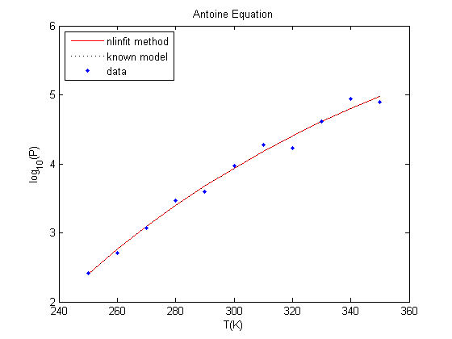
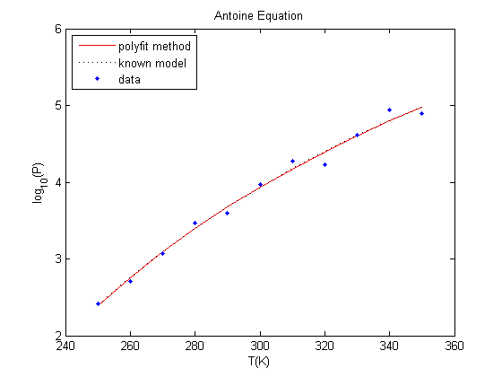
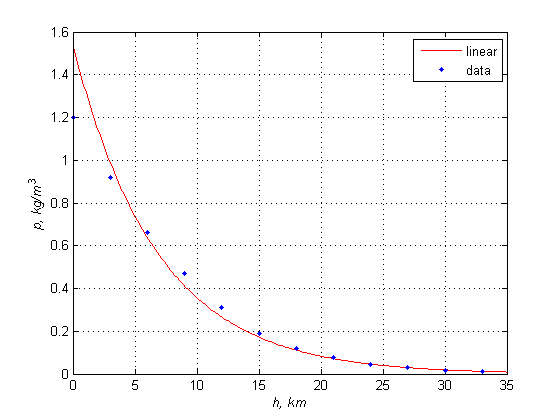
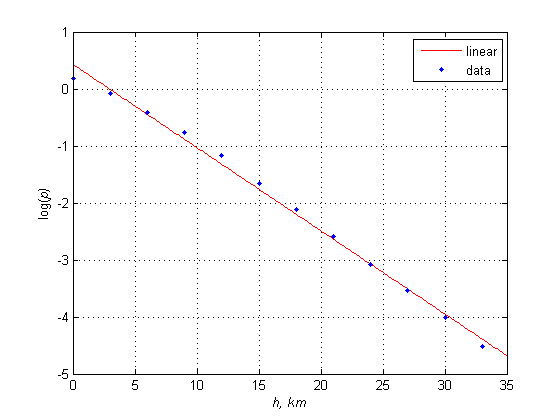
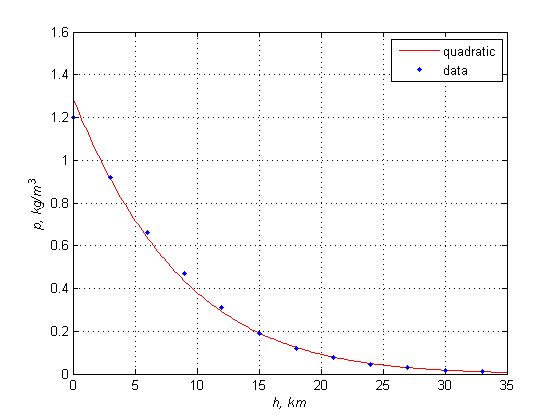
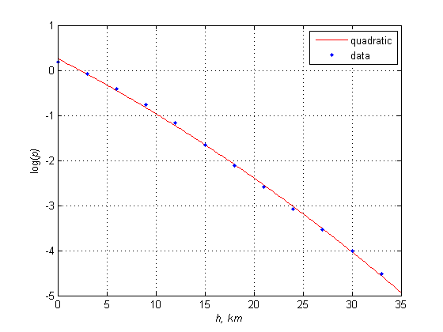

Corentin Rejaud, Recitation Week 12
Contents
Question 1
Part A
log10P = @(C,T) C(1) - ( C(2) ./ (C(3) + T) ) Ti = [250 260 270 280 290 300 310 320 330 340 350]; Pi = [260 504 1184 2910 3913 9462 18841 16952 41529 86903 77537]; ce = [10.33 1642.89 -42.85]; Pe = log10P(ce,Ti); c0 = [1 1000 -1]; c = nlinfit(Ti,Pe, log10P, c0) P0 = log10P(c,Ti); figure; plot(Ti, P0, 'r-', Ti, Pe, 'k:', Ti, log10(Pi), 'b.'); title('Antoine Equation'); xlabel('T(K)'); ylabel('log_{10}(P)'); xlim([240 360]); ylim([2 6]); set(gca,'xtick',[240:20:360]); set(gca,'ytick',[2:1:6]); grid off; legend('nlinfit method', 'known model', 'data', 'location', 'nw'); % Part B a = 10.33; y = 1./(a - log10(Pi)) x = Ti; p = polyfit(x, y, 1) b = 1/p(1) c = b * p(2) figure; C0 = [a b c]; plot(Ti, log10P(C0,Ti), 'r-', Ti, Pe, 'k:', Ti, log10(Pi), 'b.'); title('Antoine Equation'); xlabel('T(K)'); ylabel('log_{10}(P)'); xlim([240 360]); ylim([2 6]); set(gca,'xtick',[240:20:360]); set(gca,'ytick',[2:1:6]); grid off; legend('polyfit method', 'known model', 'data', 'location', 'nw');
log10P =
@(C,T)C(1)-(C(2)./(C(3)+T))
c =
1.0e+03 *
0.0103 1.6429 -0.0429
y =
Columns 1 through 7
0.1263 0.1311 0.1378 0.1456 0.1484 0.1574 0.1652
Columns 8 through 11
0.1639 0.1751 0.1855 0.1838
p =
0.0006 -0.0263
b =
1.6418e+03
c =
-43.2596
  Question 2
clear all; % Part A xi = [1.0 1.4 1.9 2.1 2.7 3.0 3.3 3.9 4.2]'; yi = [0.18 0.21 0.21 0.20 0.20 0.19 0.18 0.16 0.16]'; A = [1./xi xi] Y = [1./yi] P1 = A\Y % Part B one = [1 1 1 1 1 1 1 1 1]'; A = [one xi.^2] Y = [xi./yi] P2 = A\Y % Part C y = @(C, X) 1 ./ (C(1)./X + C(2).*X); C0 = [4 1]; P3 = nlinfit(xi, yi, y, C0) % Part D names = {'basis {x^{-1},x}' 'basis {1, x^2} ' 'nlinfit '} a = [P1(1);P2(1);P3(1)] b = [P1(2);P2(2);P3(2)] fprintf(' method a b \n'); fprintf('---------------------------------\n'); for i = 1:3, fprintf('%-s %6.4f %6.4f\n', names{i}, a(i), b(i)); end
A =
1.0000 1.0000
0.7143 1.4000
0.5263 1.9000
0.4762 2.1000
0.3704 2.7000
0.3333 3.0000
0.3030 3.3000
0.2564 3.9000
0.2381 4.2000
Y =
5.5556
4.7619
4.7619
5.0000
5.0000
5.2632
5.5556
6.2500
6.2500
P1 =
4.3012
1.2858
A =
1.0000 1.0000
1.0000 1.9600
1.0000 3.6100
1.0000 4.4100
1.0000 7.2900
1.0000 9.0000
1.0000 10.8900
1.0000 15.2100
1.0000 17.6400
Y =
5.5556
6.6667
9.0476
10.5000
13.5000
15.7895
18.3333
24.3750
26.2500
P2 =
4.4293
1.2696
P3 =
4.2925 1.2933
names =
'basis {x^{-1},x}'
'basis {1, x^2} '
'nlinfit '
a =
4.3012
4.4293
4.2925
b =
1.2858
1.2696
1.2933
method a b
---------------------------------
basis {x^{-1},x} 4.3012 1.2858
basis {1, x^2} 4.4293 1.2696
nlinfit 4.2925 1.2933
Question 3
clear all; hi = 0:3:33 pi = [1.2 0.92 0.66 0.47 0.31 0.19 0.12 0.075 0.046 0.029 0.018 0.011] % Part A % plot(hi, pi, 'r-', hi, pi, 'b.'); p = polyfit(hi, log(pi), 1) h = linspace(0,35,201); y = exp(polyval(p,h)); figure; plot(h, y, 'r-', hi, pi, 'b.'); grid on; xlabel('\it{h}, km'); ylabel('\it{p}, kg/m^3'); xlim([0 35]); ylim([0 1.6]); set(gca,'xtick',[0:5:35]); set(gca,'ytick',[0:0.2:1.6]); legend('linear', 'data', 'location', 'ne'); figure; plot(h, log(y), 'r-', hi, log(pi), 'b.'); grid on; xlabel('\it{h}, km'); ylabel('log(\it{p})'); xlim([0 35]); ylim([-5 1]); set(gca,'xtick',[0:5:35]); set(gca,'ytick',[-5:1:1]); legend('linear', 'data', 'location', 'ne'); % Part B p = polyfit(hi, log(pi), 2) h = linspace(0,35,201); y = exp(polyval(p,h)); figure; plot(h, y, 'r-', hi, pi, 'b.'); grid on; xlabel('\it{h}, km'); ylabel('\it{p}, kg/m^3'); xlim([0 35]); ylim([0 1.6]); set(gca,'xtick',[0:5:35]); set(gca,'ytick',[0:0.2:1.6]); legend('quadratic', 'data', 'location', 'ne'); figure; plot(h, log(y), 'r-', hi, log(pi), 'b.'); grid on; xlabel('\it{h}, km'); ylabel('log(\it{p})'); xlim([0 35]); ylim([-5 1]); set(gca,'xtick',[0:5:35]); set(gca,'ytick',[-5:1:1]); legend('quadratic', 'data', 'location', 'ne'); % Part C h = [5 10] % Part I r = exp(polyval(p,h)) % Part II spline = interp1(hi, pi, h, 'spline') % Part III pchip = interp1(hi, pi, h, 'pchip')
hi =
0 3 6 9 12 15 18 21 24 27 30 33
pi =
Columns 1 through 7
1.2000 0.9200 0.6600 0.4700 0.3100 0.1900 0.1200
Columns 8 through 12
0.0750 0.0460 0.0290 0.0180 0.0110
p =
-0.1460 0.4282
p =
-0.0011 -0.1113 0.2547
h =
5 10
r =
0.7205 0.3817
spline =
0.7397 0.4139
pchip =
0.7400 0.4129
   